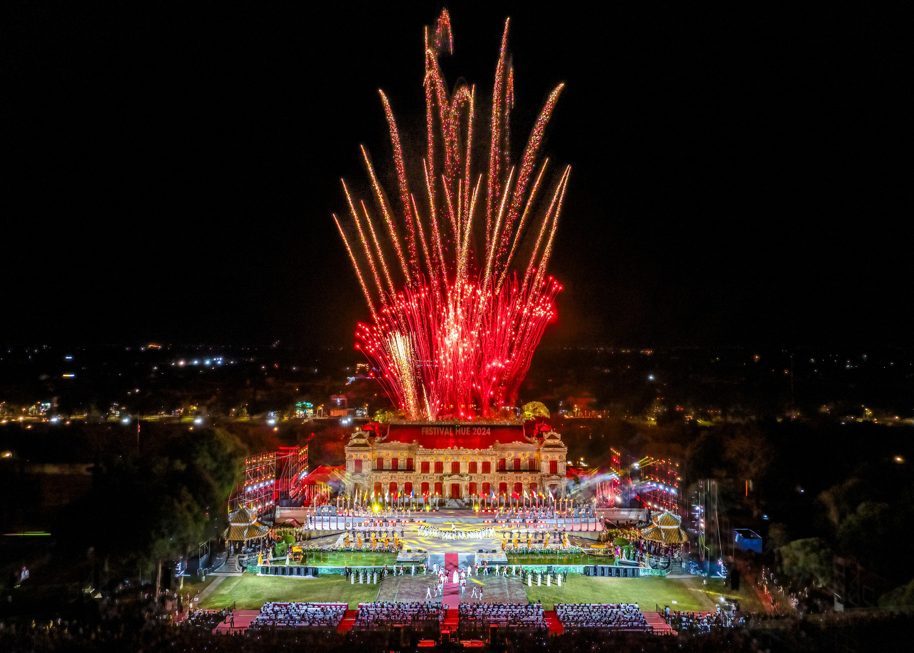

🎭 Festival Huế
📍 Địa điểm: TP Huế
🕒 Thời gian tổ chức: Định kỳ trong năm
🎫 Giá vé: Một số chương trình miễn phí, một số có bán vé
📖 Giới thiệu
Festival Huế là sự kiện văn hóa nghệ thuật lớn và nổi tiếng của Việt Nam, được tổ chức tại thành phố Huế nhằm tôn vinh giá trị văn hóa truyền thống cố đô và giao lưu quốc tế. Đây là dịp để giới thiệu hình ảnh Huế đến du khách trong nước và bạn bè thế giới.
Festival quy tụ nhiều chương trình hấp dẫn như biểu diễn nghệ thuật cung đình, âm nhạc hiện đại, lễ hội đường phố, trình diễn áo dài và các hoạt động cộng đồng. Sự kiện góp phần quảng bá du lịch, văn hóa và con người Huế.
⚠️ Lưu ý
🎫 Kiểm tra lịch diễn trước khi tham gia.
👥 Giữ tư trang nơi đông người.
🚯 Không xả rác tại khu vực tổ chức.
📷 Tuân thủ quy định chụp ảnh từng chương trình.
🏯 Hoạt động nổi bật
● Lễ khai mạc và bế mạc hoành tráng
● Biểu diễn Nhã nhạc cung đình Huế
● Lễ hội đường phố đầy màu sắc
● Trình diễn áo dài truyền thống
● Chương trình nghệ thuật quốc tế
● Ẩm thực và triển lãm văn hóa
📸 Gợi ý tham quan
● Xem lịch để chọn chương trình yêu thích.
● Tham quan Đại Nội vào buổi tối khi có sự kiện.
● Chụp ảnh tại các sân khấu ngoài trời và phố đi bộ.
● Kết hợp thưởng thức ẩm thực Huế.
● Đi cùng bạn bè hoặc gia đình để trải nghiệm trọn vẹn hơn.